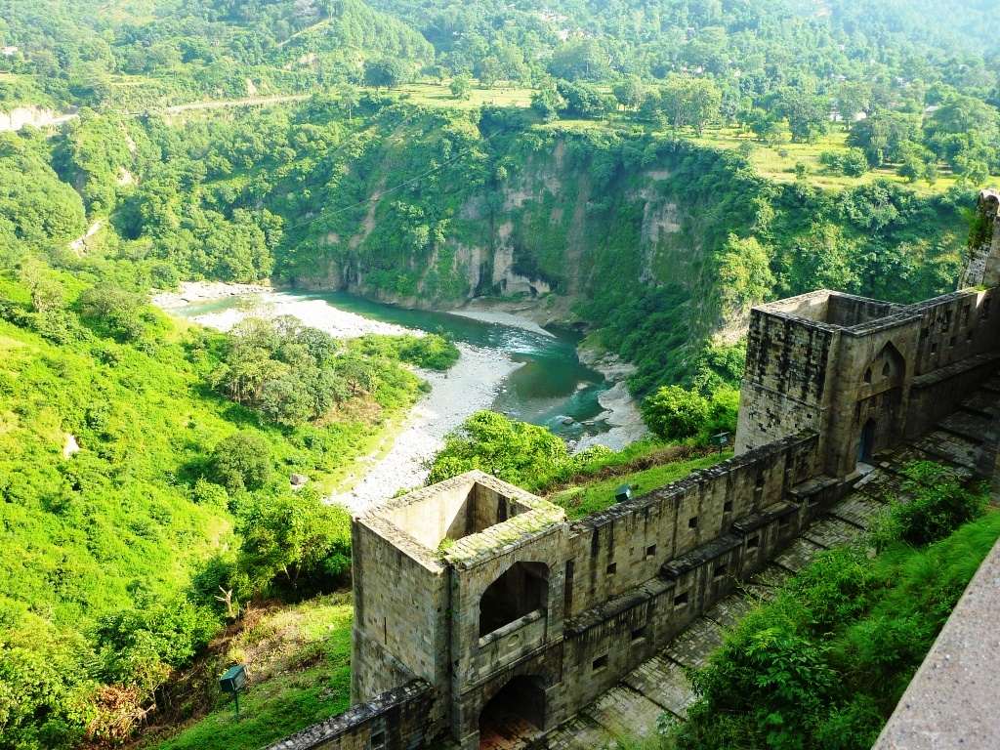

Introduction
The small town of Kangra was the capital of the erstwhile rulers of the Chand dynasty. It is set amongst the picturesque settings of the Kangra valley at the foothills of the majestic Dhauladhar range. The area around Kangra is known for its ancient temples and picturesque surroundings, which attract the tourists.
Location
Kangra is located in the western part of the state of Himachal Pradesh, in the northern region of India. It is 18 km south of Dharamshala. The weather in Kangra is alpine. Summers (April-June) are mild and winters are cold (November-February). It experiences southwestern monsoon rains in July-September. The Kangra region receives the second highest rainfall per annum.
History
The town of Kangra has a chequered past. It has been sacked a number of times because of the wealth accumulated within the Vajreshwari temple. The immense wealth of this temple attracted Mahmud of Ghazni, the famous plunderer from Central Asia. He looted an enormous treasure trove of gold and silver and jewelry from this temple in AD 1009. The Tughlaq rulers of the Delhi Sultanate again plundered it in 1360. However, the town made a good recovery, and during the reign of the Mughal emperor Jahangir in the early 17th century, this temple was paved with plates of pure silver. This area was ruled by local rulers and was later annexed by the British, who established a garrison in Kangra.
Fair And Festivals
Pilgrims flock to Kangra in the month of April for the Navratra celebrations, and in September-October, before the Dussehra festival, to pay their homage to Goddess Durga at the Vajreshwari (Kangra Devi) temple.
Best time to Vist
The best time to visit Kangra is between March and June
How to Reach
BY AIR - The nearest domestic airport to Kangra city is Gaggal airport, which is located at a distance of 13 km. Jammu (200 km), Amritsar (208 km) and Chandigarh (225 km) are the other airports, which are ideal for reaching Kangra. Taxis and cabs are available from all the airports to reach Kangra. BY RAIL - Pathankot Junction Railway Station is the nearest railway station to Kangra, which is around 90 km away from here. This broad gauge railhead is connected with important towns and cities via regular trains. BY ROAD - Kangra is very well-connected by road with all the important cities of Himachal Pradesh state and other cities and towns of India. Regular private and state-owned buses are available to Kangra from destinations like Palampur, Dharamshala, Pathankot, Amritsar, Jammu, Chandigarh, Shimla etc. One can also opt for a private taxi.
Tourist Attractions
The small town of Kangra is famous for its Vajreshwari Devi (Kangra Devi) temple. Though the original temple was destroyed in a devastating earthquake, the present one is rebuilt on the same site. A large number of devotees throng this temple during various Hindu festivals. The ancient fort of Nagar Kot is located 2.5 km south of the town, perched on a high windswept ridge. Although this fort is in ruins, the travelers can enjoy the panoramic view of the surroundings, which includes the confluence of Manjhi and Baner rivers.
Places Around Kangra
There are a number of important temples near Kangra. The small town of Masrur, 15 km from Kangra, is known for its intricately carved temples. Masrur has a group of 15 sandstone-hewed monolithic rock-cut temples belonging to 10th century AD. The carvings and sculpture found in this group of temple reminds one of the world-famous rock-cut temples of Ellora in the state of Maharashtra. Though most of the temples and sculptures are in a bad shape, yet they reflect the glory of the bygone era. The road from Kangra to Masrur offers magnificent views of the Dhauladhar range. The temple of Jawalamukhi is 34 km south of Kangra. A marvel in itself, it is perhaps the only temple in India where natural jets of flame flare out from the hillside covered by the ancient, holy edifice. The temple has been a major attraction for an assortment of people down the centuries.